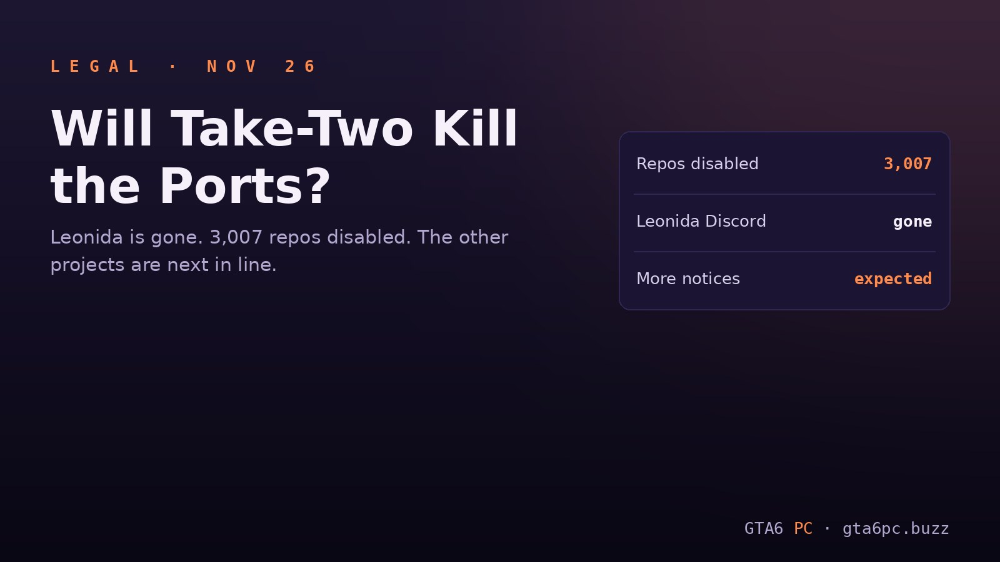

Will Take-Two shut down every GTA 6 PC port?
Take-Two has already killed the biggest GTA 6 PC port project. On November 24, GitHub disabled Leonida and all 3,007 repositories in its fork network after a DMCA notice from Take-Two's IP enforcement team. The question now is whether VIctory, XCL and the dozens of forks chasing them are next. Take-Two's own history says yes, and the projects are already reacting: some have gone private, one removed the game's name from its code, and another stopped answering on GitHub with no explanation.

What happened to Leonida
Leonida was the project everyone watched. Led by 15-year-old NotRexed, who had previously built a well-known Ocarina of Time recompilation, it aimed to recompile the leaked GTA 6 Xbox build into a native PC version. Within hours of the missing executable leaking on November 23, the game had reached its settings screens on PC, and Leonida's Discord said it "almost boots". Then it fell apart in a day. On November 23 its creator stepped away, saying Rockstar had the project's Discord server taken down, and PC Gamer reported the notice Discord sent. The server had nearly 180,000 members. NotRexed later said the takedown was only part of the reason he quit, and that he was also tired of adults screaming at him on Discord.
The legal blow landed on November 24. Take-Two's IP enforcement team filed a DMCA notice with GitHub, and GitHub disabled Leonida's whole network of 3,007 repositories. Take-Two called the project a derivative work that breaks Rockstar's ban on reverse engineering, and said the "bring your own files" instruction was intentionally misleading, since the leaked files are the only ones anyone could supply. Our crackdown report has the full timeline of the takedown.
Why the bring-your-own-files defence failed
Leonida's developers had tried to stay on the safe side of the line. The repository did not distribute the game's files directly. Instead, it asked users to supply their own Xbox game files, the same approach fan rebuild projects have used for years. Take-Two rejected that argument outright in its complaint, and the reasoning matters for every project that followed.
First, there is no legitimate copy of the GTA 6 Xbox build that a PC user could supply. The game files in circulation come from the leak of a November 2026 Xbox build, distributed publicly on November 20, and Take-Two's notice says so directly. Second, the project's timing and its explicit focus on GTA 6 made it clear which files it meant. Third, the complaint also pointed to Section 2.3 of Rockstar's Terms of Service, which prohibits reverse engineering, decompiling and modifying its games. The instruction to bring your own files did not change what the code did with them, and Take-Two treated it as an attempt to avoid responsibility rather than a defence.
That reasoning applies word for word to VIctory, XCL and every fork in the race. They do not distribute the game either, and they also need the leaked build to run. If the argument failed for Leonida, there is no reason to think it would succeed for them.
Take-Two's track record
This is not Take-Two's first move against fan ports. On November 18, six days before the Leonida notice, it went after unofficial GTA 5 ports with the same argument. Back in 2021, it sued the people behind re3 and reVC, fan-made rebuilds of GTA 3 and Vice City. The company has shown it will use both DMCA notices and full lawsuits, and it will go after projects that do not distribute game files as well as ones that do.
The company also said it was coming. Take-Two chief executive Strauss Zelnick said in November that Take-Two is beefing up its defences against AI-assisted reverse engineering and unofficial PC ports, so the Leonida notice looks like a policy being carried out rather than a one-off reaction. TweakTown, in its November 25 state-of-the-race report, is blunt about what follows: "I fully expect more notices to land as these projects inch closer to being playable."
How the other projects are reacting
The race has not stopped, but it is changing shape. TweakTown reports that a few groups have gone private since the takedown. The live race tracker records the details: one project, palmetto, removed the game's name and the Leonida project's name from its repository in response to the notice. Another runtime, keylime, stopped answering over git between 22:28 and 22:59 UTC on November 25, with no published takedown notice naming it and the reason not known. A continuation project called Leonida Continued has appeared, aiming to carry on the halted recompilation work.
The crackdown is also spreading beyond GitHub. Clips of the ports running have been disappearing from X, and a YouTube takedown of a video about the race carried Take-Two's name. Within a day of the victory-fork code appearing, 63 strangers had run it on their own machines, which shows how fast public code spreads, and also why Take-Two would rather the code was not public at all.
Can a DMCA notice kill the whole race?
A DMCA notice is powerful on one platform and limited everywhere else. On GitHub it works because GitHub complies, and a single notice can take down a whole fork network, as the 3,007 disabled repositories show. Projects can answer with a counter-notice, but that means identifying yourself to Take-Two's lawyers and arguing the code does not infringe, which is a hard argument when the code only runs with leaked files.
Moving off GitHub is possible, and some of it is already happening. Code can live on self-hosted git servers, other forges, or in private groups shared by invite. But the move has a cost. The race moved as fast as it did because the code was public: fixes from one fork were merged into another within hours, and the fastest build today, VIctory-7900XTX, is literally a combination of three other projects' work. Private groups can still share code, but they share it slower, with fewer eyes, and with no public record for trackers to verify. The result is a race that is harder to follow, harder to verify, and still built on the same leaked files.
The other limit on Take-Two's reach is that a takedown removes code, not knowledge. The techniques for translating Xbox shaders to DirectX 12 and reimplementing console system functions are now understood by dozens of developers across 43 open-source projects and five private builds. Take-Two can keep taking down repositories faster than developers can re-upload them, but it cannot take down what those developers have learned.
What it means for players
For anyone waiting to play GTA 6 on PC, the takedown changes nothing about the safe options, and it makes the unsafe ones worse. There is still no legitimate download, and the move toward private groups means more of the claims you see will come from builds nobody outside the group can test. Private builds are where the most impressive numbers live, including the reported 25 fps from CGBJ, and they are also where verification is thinnest. Our legality explainer covers the risks of downloading the leaked build, and our download scams guide lists the fake installers already using the leak as bait.
The official route is still the one to watch. Rockstar has not announced a PC version, and a GamesBeat report from October 2026 says it is targeting the first quarter of 2027, but Rockstar has not confirmed it. Our release date page tracks that report and every official statement. Until Rockstar announces something, the port race is a technical story to follow, not a game to download.
Quick answers
Why did Take-Two shut down Leonida?
Take-Two filed a DMCA notice saying Leonida was a derivative work that broke Rockstar's ban on reverse engineering and relied on the leaked GTA 6 Xbox build. It called the project's bring-your-own-files instruction intentionally misleading, and GitHub disabled Leonida and all 3,007 repositories in its fork network.
Will Take-Two shut down VIctory too?
Nothing is confirmed, but the risk is high. VIctory and its forks run the same leaked Xbox build, and Take-Two has said it is beefing up its defences against unofficial PC ports. TweakTown expects more notices as the projects get closer to playable.
Can the port projects move somewhere else?
In principle, yes. Code can move to self-hosted git, other forges or private groups. In practice, going private slows the shared fixes that made the race move so fast, and the leaked build itself stays the legal weak point wherever the code lives.
Is it illegal to download the leaked GTA 6 build?
Take-Two's position is that the build is stolen and that downloading or distributing it infringes its copyright. Download sites offering it are also a common source of malware. Our legality explainer covers the risks in detail.
When is the official GTA 6 PC version coming?
Rockstar has not announced a PC version or a date. A GamesBeat report from October 2026, citing four industry sources, says Rockstar is targeting the first quarter of 2027, but Rockstar has not confirmed it.
Last updated . We update this page when Rockstar announces anything new.
Sources
- News18: GTA 6 fans found a way to bring it to PC, but Take-Two had other plans
- ABP Live: GTA 6 on PC will have to wait as Take-Two shuts down unofficial port project
- Free Press Journal: GTA 6 unofficial PC version taken down as Rockstar intensifies copyright crackdown
- TweakTown: The state of GTA 6 on PC, everything you need to know